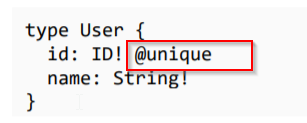

Step 1 : Install docker toolbox & keep it running in the background
Step 2 : npm i -g prisma
Step 3 : prisma init prisma
Step 4: docker-compose up -d
Step 5 : prisma deploy ( needs to be after every changes to the db)
Schema

Note : Prisma creates the CRUD for every type on it's own.